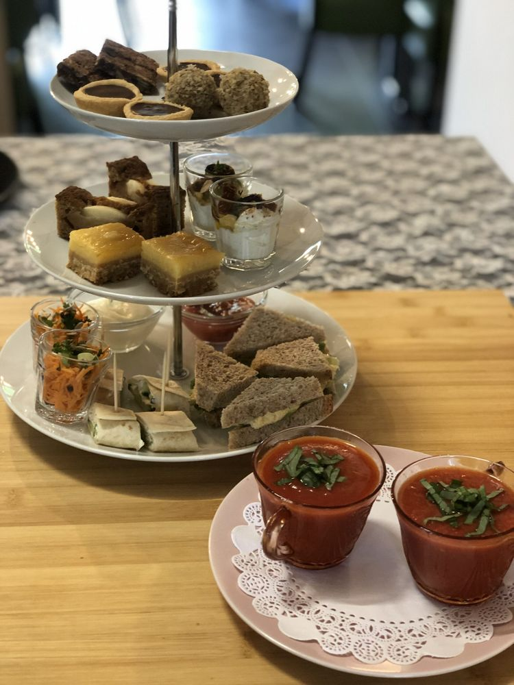
High tea
Zoete en verrassende hartige hapjes, met onbeperkt biologische thee. Neem ruim de tijd om in alle rust te genieten.
Vanaf € 14,50 p.p.Meer info
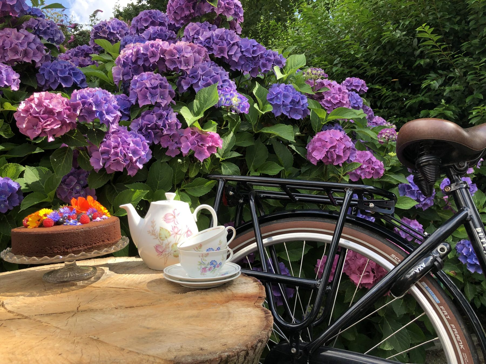
Theeschenkerij in Sprundel, aan mooie wandel- en fietsroutes. Alles huisgemaakt, met biologische en lokale ingrediënten.
Vanmiddag geweest en het was zooo lekker! Heerlijk rustige omgeving, leuke gastvrouw en superlekker eten. Wat wil je nog meer?Een gast van Natuurlekker
We bakken met natuurlijke ingrediënten, biologisch of lokaal. De producten van het seizoen bepalen het aanbod.

Zoete en verrassende hartige hapjes, met onbeperkt biologische thee. Neem ruim de tijd om in alle rust te genieten.
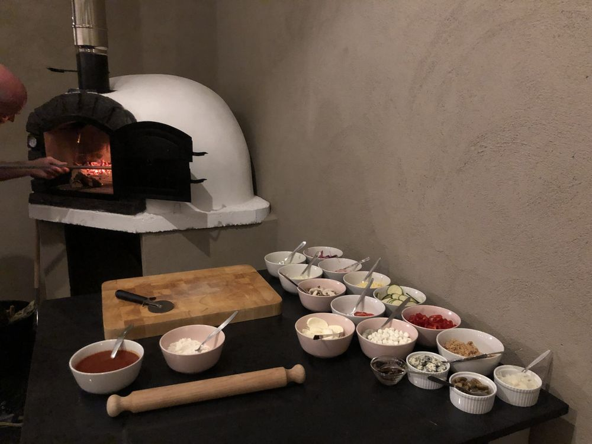
Zelf je pizza beleggen en bakken in de houtoven van 400 °C. Superleuk met familie, vrienden of je team.
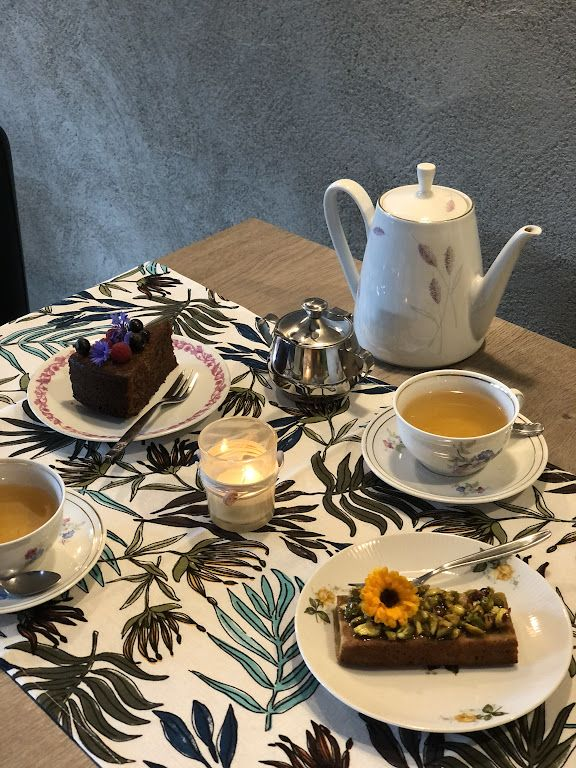
Huisgemaakte lekkernijen bij je thee of koffie, ook plantaardig. Kun je niet kiezen? Neem de Natuurlekkere Trek.
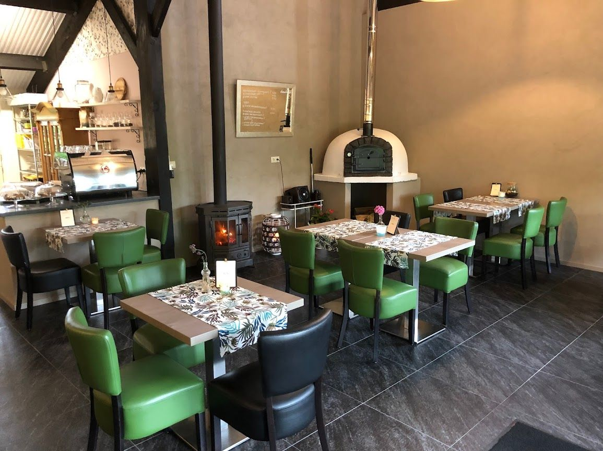
In het weekend of doordeweeks kun je met een groep vanaf 10 personen bij ons reserveren. We stoken de houtkachel op, steken de kaarsjes aan en zorgen voor wat lekkers.
Kies voor thee of koffie met taart, een mini high tea, een uitgebreide high tea of samen pizza's bakken. Heb je een ander idee? Laat het ons weten.
Dat kan in overleg in het weekend. De mogelijkheden zijn dan wat beperkter, maar we doen je graag een passend voorstel.
Al het eten was ontzettend lekker en niet de standaard, simpele vegan dingen die je normaal voorgeschoteld krijgt. De zoete dingen waren ook niet te zoet, wat wij heel fijn vonden. De balans was perfect!
Gast van NatuurlekkerGezellige locatie, leuk ingericht, oog voor detail. En vooral uitzonderlijk lekker en een verantwoorde high tea.
Gast van NatuurlekkerWij hebben genoten van de heerlijke high tea, sfeervolle omgeving en jullie hele vriendelijke aandacht!!!
Gast van NatuurlekkerWe zijn echt positief verrast over de kwaliteit en de verschillende smaken. We willen zeker weer een keertje langs komen.
Gast van NatuurlekkerJullie hebben ons verwend met zoveel lekkernij, de gezellige sfeer en jullie vriendelijkheid.
Gast van NatuurlekkerHeel goede lunchgelegenheid. Mooie omgeving, vriendelijke bediening, super lekkere gerechten.
Gast van NatuurlekkerNatuurlekker ligt direct aan de route. Even binnenlopen voor een verse kop thee, een stukje taart of een biologisch sapje.
Tussen knooppunt 47 en 70 van het wandelnetwerk West-Brabant, direct aan de route.
Loop je de Lokkerbergroute of Bliklooproute van Beleef Sprundel? Loop niet alleen langs, maar kom even binnen.
Links de straat uit kom je bij het uitkijkpunt over De Lokker, en daarna wandel je zo natuurgebied De Pannenhoef in.
Fiets je de ANWB-route van knooppunt 77 naar 09 of andersom? Halverwege sla je de Kolkstraat in.
Fietsroute langs de mooiste plekjes van het dorp. Vanaf de Turfstraat ben je zo bij ons.
Voor je e-bike is er een oplaadpunt. Even bijladen terwijl jij geniet.
Start of tussenstop bij Natuurlekker voor thee of koffie met iets lekkers. Met een groep vanaf 10 personen kan dat ook doordeweeks.
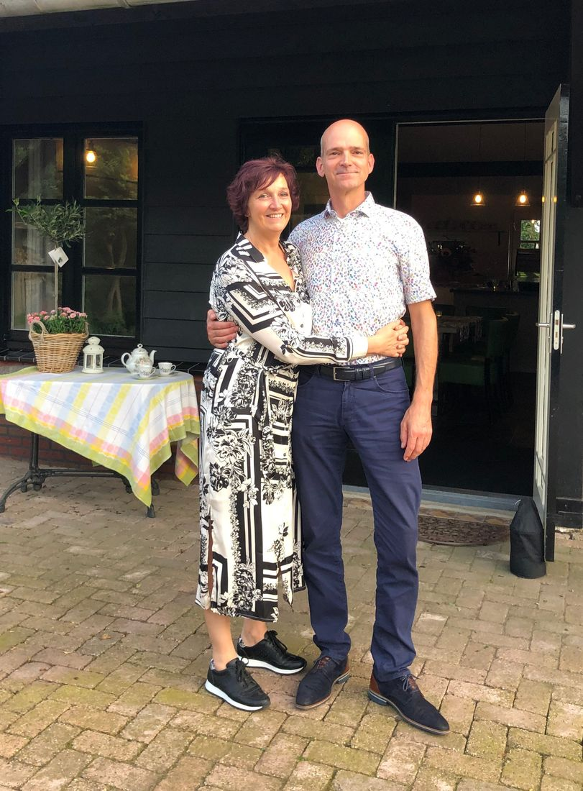
Natuurlekker ligt in een landelijke en rustige omgeving en staat voor kleinschalige gastvrijheid en pure producten. Alle lekkernijen en high tea-gerechten zijn huisgemaakt en zo natuurlijk mogelijk bereid. Bij mooi weer zit je heerlijk op het terras.
Duurzaamheid staat hoog in het vaandel. We streven naar zero waste, de koffie- en theeresten gaan als compost de tuin in, en bij het opknappen van de theeschenkerij kregen veel bouwmaterialen een tweede leven.
Kom gezellig langs en ontdek Natuurlekker. Liefs, Josine
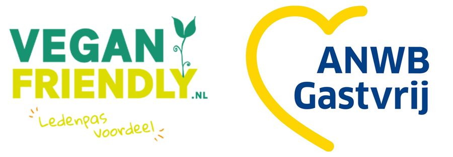
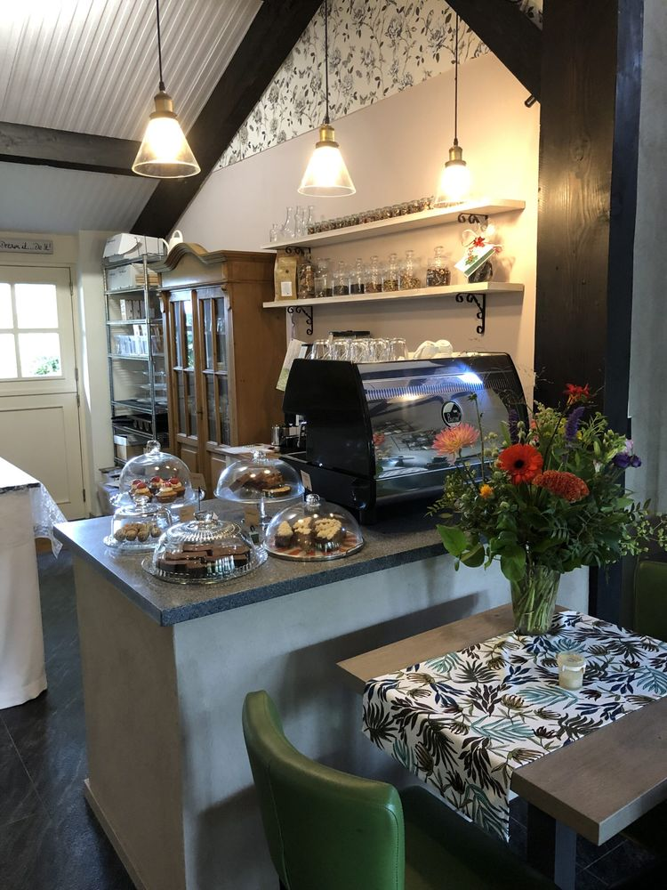
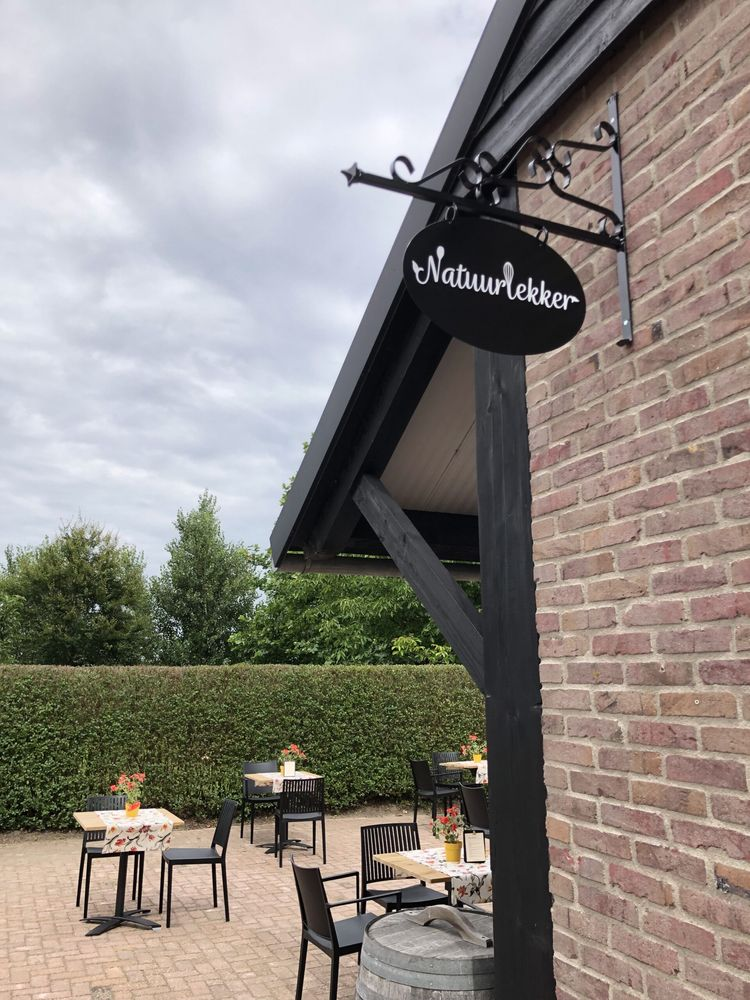
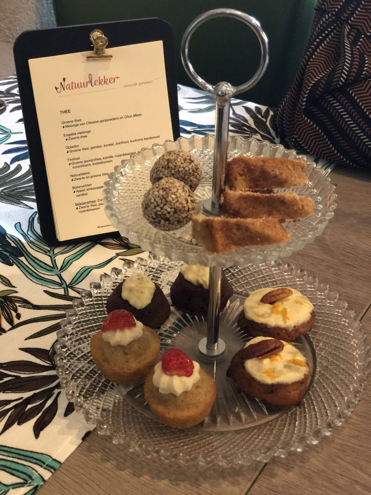
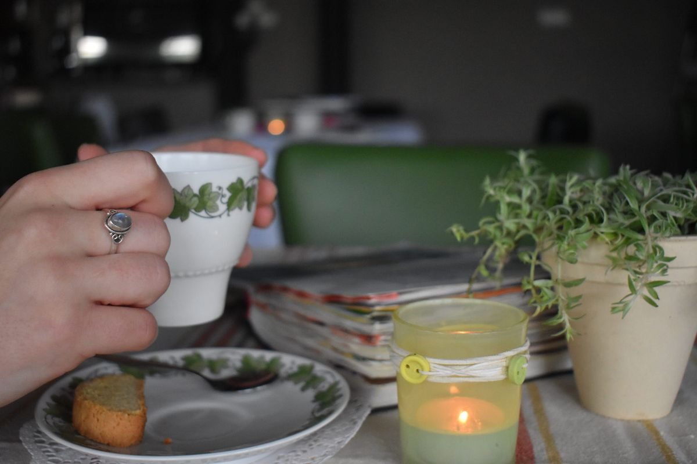
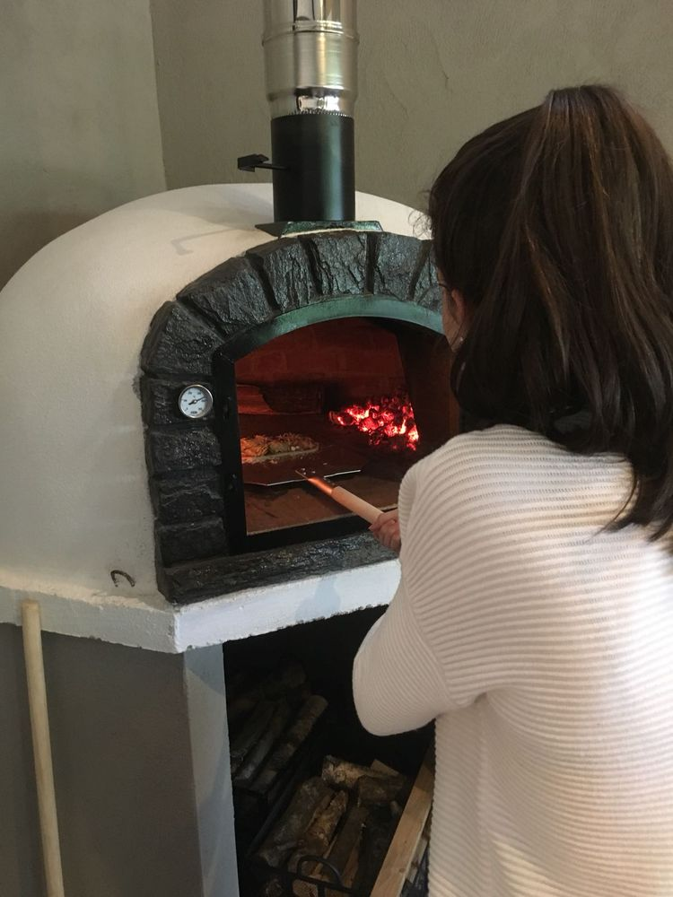
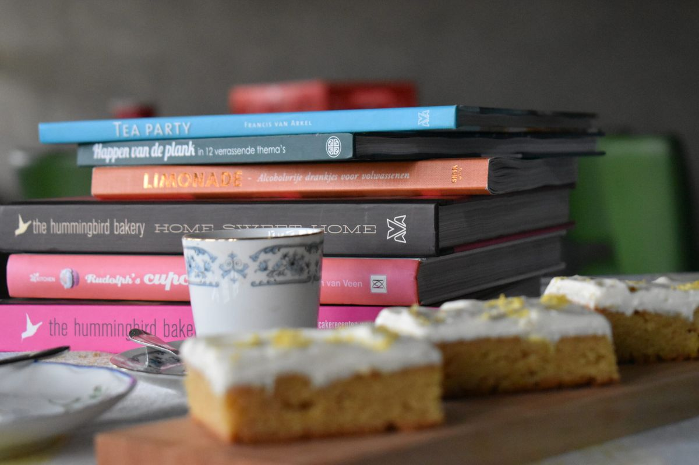
High tea en pizza's bakken kan alleen op reservering. Laat weten wat je wilt en met hoeveel personen, dan denken we graag met je mee.
Of stuur een mail, dan hoor je snel van ons.